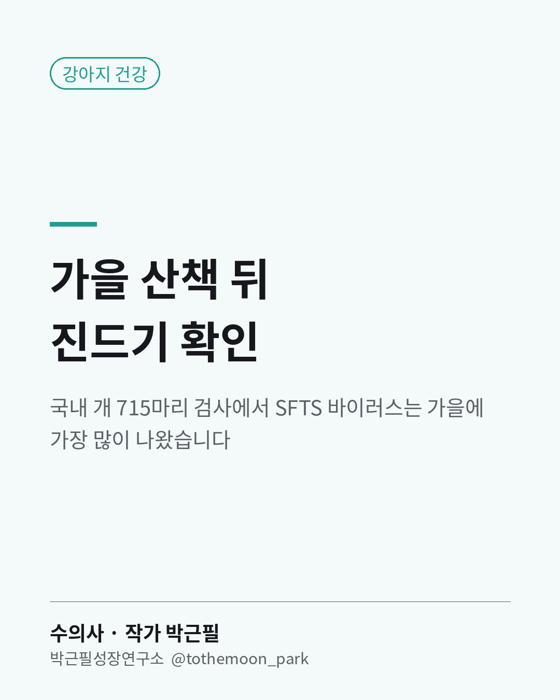

강아지
가을 산책 뒤 강아지 몸에서 진드기를 찾아보신 적 있으신가요?

진드기가 옮기는 SFTS(중증열성혈소판감소증후군) 바이러스는 개에게서도 나옵니다.
2024년 전국에서 개 715마리의 피를 검사한 연구가 올해 나왔습니다.
16마리(2.2%)에서 바이러스가 확인됐습니다.
계절로는 가을이 4.9%로 가장 높았습니다.
보호소 개가 반려견보다, 남부 지역이, 어린 개가 더 높았습니다.
2019~2020년 국내 감염견을 본 연구에서는 열과 식욕부진이 가장 흔한 증상이었습니다.
제 임상 경험으로는 산책 뒤 귀 안쪽, 겨드랑이, 발가락 사이를 먼저 살펴보시길 권합니다.
붙은 진드기는 억지로 잡아떼기보다 병원에서 떼는 편이 안전합니다.
열이 나거나 밥을 안 먹고 기운이 없으면 병원에서 확인해 보세요.
보호자가 가장 많이 묻는 질문에 답한 책 — 『할퀴고 물려도 나는 수의사니까』